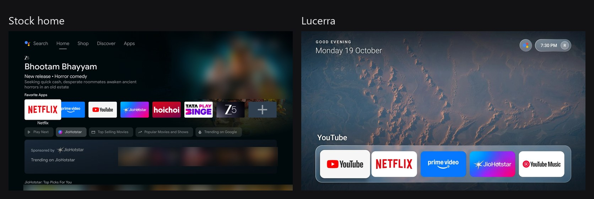
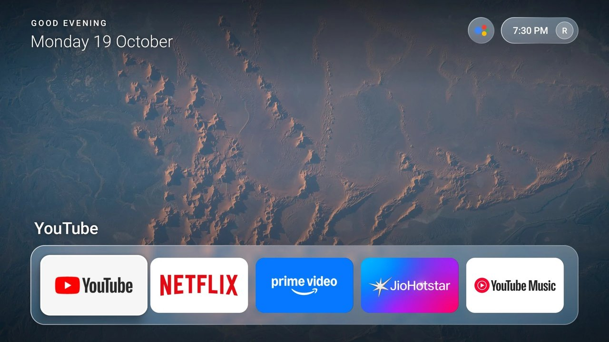
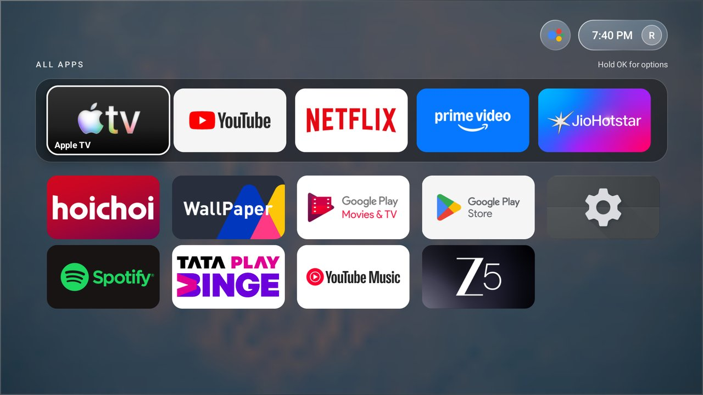

LUCERRA
LUCERRAAndroid TV launcher
A calm home for Android TV.
Five favourites on Home. All apps one press away. No ads, no recommendations, no network permission.
Free and open source. GPL-3.0. Made on a Mi Box 4K.Before and after
Less noise. Same box.
The stock home is a wall of recommendations and promoted rows. Lucerra replaces it with your five apps over a quiet NASA wallpaper, and nothing else.

Home
Five favourites, in reach.
Long-press OK on any app to pin, reorder or remove it. A glass Now Playing widget shows Spotify or any media session.

All apps
One press up.
Everything installed lives one Up press away. If you enable the accessibility service, the remote apps button opens it too.

Under the hood
Light, private, smooth.
No network permissionLucerra cannot phone home. No ads, no recommendations, no background services.
About 47 MBMemory use on a Mi Box 4K, with about 3% janky frames.
Interruptible motionSpring-driven focus you can redirect mid-move. Switch to Effects: Reduced if you prefer.
Real glass, cheaplyEach wallpaper is blurred once and the dock samples it, so there is no live blur.
Get it
Two commands.
Sideload over adb, then optionally make Lucerra the default Home. Full install guide.
adb connect <tv-ip>:5555
adb install -r Lucerra-Launcher-v0.1.0.apk